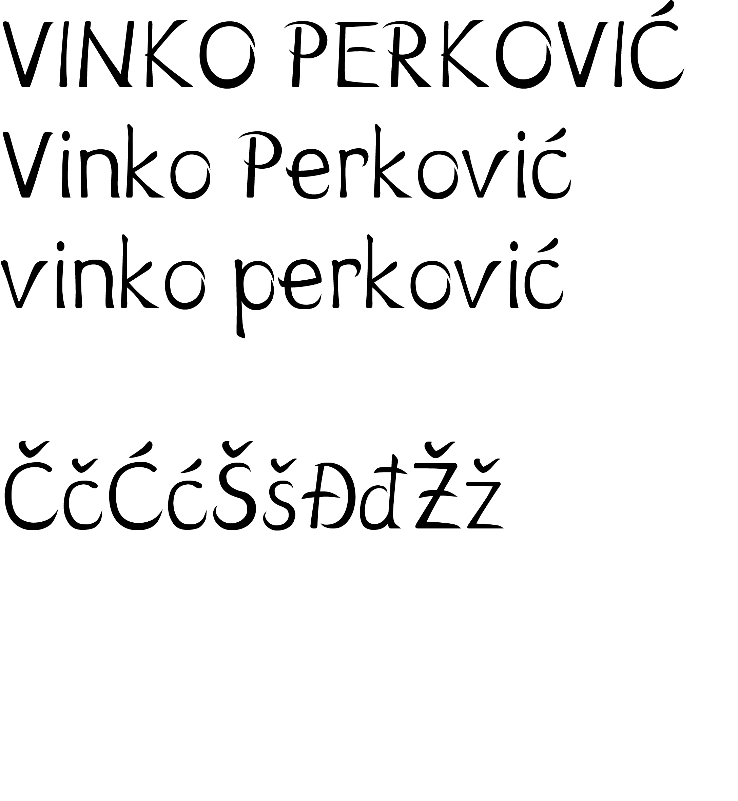
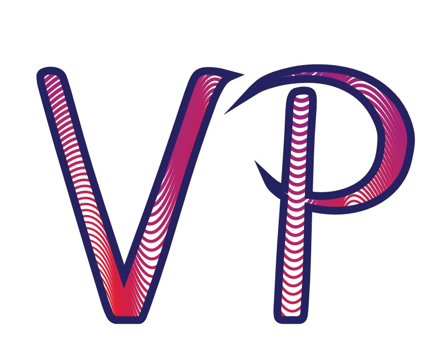
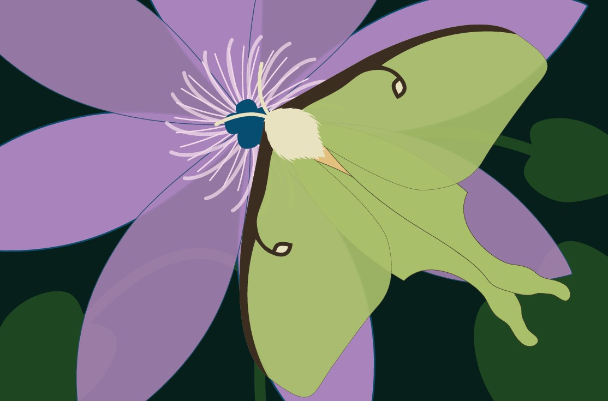
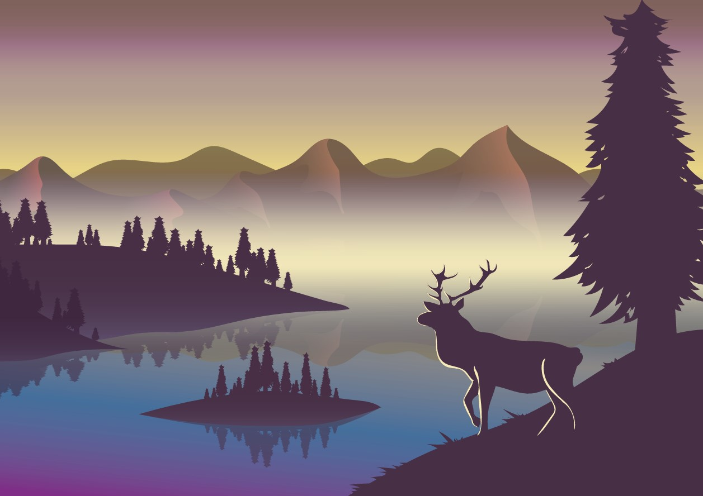

VEKTORSKA GRAFIKA

Vježba 1
Kreiranje vlastitog rukopisnog fonta.

Vježba 2
Korištenjem principa Bezierove krivulje napravljene su dvije različite linije.
Na njih je primijenjen Blend te je preko svega postavljen tekst pomoću Clipping Mask.

Vježba 3
Izrada slike, gdje su pojedinačni dijelovi uređeni na različite načine i kreirani korištenjem raznih alata poput Pen, Rotate, Reflect i sl.

Vježba 4
Uz tehnike iz prijašnje vježbe uvedeni su gradijenti te spajanje i rezanje objekata.